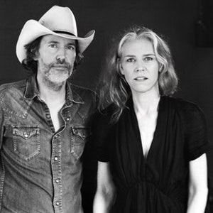

Before we go any further, before we address anything, I’d like you to forget. Maybe forget what Gillian Welch shows you’ve seen, the floorboards all sparking from the weight of these two souls, Gill and Dave, and their four collective cowboy-booted soles; maybe forget when you first heard “Orphan Girl,” that song that seemed to exist outside of time and caused everyone who heard it to become the itinerant, the loner, the longing; maybe forget the years that have passed when last a new Gillian Welch record graced the hi-fi’s of the music-listening world – forget the pop stars risen and erased in those years, the administrations and regimes born and gone in those years – forget, indeed, that there are eight of them, eight years, since Soul Journey arrived into the world.
The Harrow & The Harvest, Gill and Dave’s new record, is both a product of and is unrelated to those years in-between. Best to forget that. What it is, indisputably, is the product of two people who have become so entwined in one another that the songs and the singing and the playing on this record seems to exude from a single voice. This is the sound of two people in a room, playing to one another, with one another. This is the sound of the room in which the two people are playing. This is the sound of two voices, locked in unison, locked in harmony. The sound of two people playing live, with no overdubs, and very few takes. Two people making music together as if they were one soul combined.